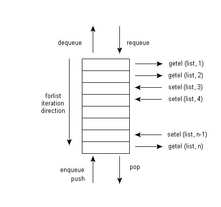

Med LifeLines programmeringssystem kan du skapa rapporter i valfri stil och layout. Du kan generera filer i troff, Postscript, TeX, SGML, eller annat valfritt ASCII-baserat format för ytterligare textbehandling och utskrifter. Du kommer åt rapportgeneratorn genom att välja kommandot r från huvudmenyn. Du kan också använda programmeringssystemet för att skapa förfrågningsprogram och andra behandlande program, vars resultat skrivs ut direkt till skärmen. Det finns till exempel ett LifeLinesprogram som beräknar relationen mellan vilka två personer som helst i en databas.
Alla LifeLinesprogram är skrivna i LifeLines programmeringsspråk, och programmen sparas i vanliga filer. När du begär att LifeLines ska köra ett program, så frågar LifeLines dig efter namnet på programfilen, frågar var du vill att utmatningen från programmet ska skrivas, och kör därefter programmet.
Anta till exempel att du vill att LifeLines ska skapa en antavla. En sådan rapport skulle kunna se ut så här:
Exempel 1. Exempel på antavelrapport
1. Thomas Trask WETMORE IV
b. 18 December 1949, New London, Connecticut
2. Thomas Trask WETMORE III
b. 15 October 1925, New London, Connecticut
3. Joan Marie HANCOCK
b. 6 June 1928, New London, Connecticut
4. Thomas Trask WETMORE Jr
b. 5 May 1896, New London, Connecticut
d. 8 November 1970, New London, Connecticut
5. Vivian Genevieve BROWN
b. 5 April 1896, Mondovi, Wisconsin
6. Richard James HANCOCK
b. 18 August 1904, New London, Connecticut
d. 24 December 1976, Waterford, Connecticut
7. Muriel Armstrong SMITH
b. 28 October 1905, New Haven, Connecticut
8. Thomas Trask WETMORE Sr
b. 13 March 1866, St. Mary's Bay, Nova Scotia
d. 17 February 1947, New London, Connecticut
9. Margaret Ellen KANEEN
b. 27 October 1859, Liverpool, England
d. 10 May 1900, New London, Connecticut
... och mycket mer
Här är ett LifeLinesprogram som genererar en sådan rappport:
Exempel 2. Exempel på rapportskript för en antavelrapport
proc main ()
{
getindi(indi)
list(ilist)
list(alist)
enqueue(ilist, indi)
enqueue(alist, 1)
while(indi, dequeue(ilist)) {
set(ahnen, dequeue(alist))
d(ahnen) ". " name(indi) nl()
if (e, birth(indi)) { " b. " long(e) nl() }
if (e, death(indi)) { " d. " long(e) nl() }
if (par, father(indi)) {
enqueue(ilist, par)
enqueue(alist, mul(2,ahnen))
}
if (par,mother(indi)) {
enqueue(ilist, par)
enqueue(alist, add(1,mul(2,ahnen)))
}
}
} |
Anta att det här programmet finns i filen anor.ll. När du väljer kommandot r från huvudmenyn, så frågar LifeLines:
Vad är namnet på programmet? Förvald sökväg: . skriv in filnamn (*.ll) |
Du skriver in anor. Eftersom programmet genererar en rapport, så frågar LifeLines var det ska skriva rapporten:
Vad är namnet på utmatningsfilen? skriv in filnamn: |
Du skriver in ett filnamn, till exempel mina.anor. LifeLines läser in programmet anor.ll, kör programmet, och skriver ut rapporten till mina.anor. LifeLines rapporterar alla syntax- eller körningsfel som hittas medan programmet körs.
Ett LifeLinesprogram består av procedurer och funktioner; alla program måste innehålla minst en procedur benämnd main. Proceduren main körs först; det kan anropa andra procedurer, funktioner och inbyggda funktioner. I exemplet med antavlan finns det bara en procedur.
En procedurkropp består av en följd av deklarationer. I exempelprogrammet är de fem första deklarationerna följande:
getindi(indi) list(ilist) list(alist) enqueue(ilist, indi) enqueue(alist, 1) |
Den första deklarationen anropar den inbyggda funktionen getindi (get individual - hämta person), vilken får LifeLines att be dig identifiera en person i den kortfattade stilen för identifiering.
Skriv in sträng för program skriv in namn, nyckel, refn eller lista: |
Efter att du har identifierat en person, så tilldelas han
eller hon variabeln indi. De följande två
deklarationerna anger två
listvariabler, ilist och
alist. Listor innehåller
sekvenser av saker; det finns operationer för att placera
saker i listor, plocka bort saker därifrån, och för att
iterera genom listelementen. I exemplet innehåller
ilist en lista med anor i antavelordning
som ännu inte rapporterats, och alist
innehåller deras respektive annummer.
De följande två deklarationerna anropar
funktionen enqueue, varvid de första
medlemmarna läggs till i båda listorna. Personen som
identifierats av funktionen getindi blir
den första medlemmen i ilist, och numret
ett, denna persons antavelnummer, blir den första medlemmen i
alist.
Den återstående delen av programmet är:
while(indi, dequeue(ilist)) {
set(ahnen, dequeue(alist))
d(ahnen) ". " name(indi) nl()
if (e, birth(indi)) { " b. " long(e) nl() }
if (e, death(indi)) { " d. " long(e) nl() }
if (par, father(indi)) {
enqueue(ilist, par)
enqueue(alist, mul(2,ahnen))
}
if (par, mother(indi)) {
enqueue(ilist, par)
enqueue(alist, add(1,mul(2,ahnen)))
}
}
|
Detta är en loop som iterativt tar bort personer och deras antavelnummer från de två listorna, och därefter skriver ut deras namn och födelse- och dödsdata. Om personerna har föräldrar i databasen, så placeras föräldrarna och föräldrarnas antavelnummer på slutet av respektive lista. Loopen itererar till dess listan är tom.
Loopen är en loopdeklaration av typen while. Raden:
while(indi, dequeue(ilist)) {
|
ilist, och tilldelar personen till
variabeln indi. Så länge som det finns
personer i ilist, så följer ytterligare en
iteration av loopen.
Deklarationen:
set(ahnen, dequeue(alist)) |
alist bort, och tilldelas till variabeln
ahnen. Detta är antavelnumret på personen
som just togs bort från ilist.
Raden:
d(ahnen) ". " name(indi) nl() |
De nästa två raderna:
if(e, birth(indi)) { " b. " long(e) nl() }
if(e, death(indi)) { " d. " long(e) nl() } |
e, och kroppen (det som finns
mellan klammerparenteserna) för if-deklarationen
exekveras. Kroppen består av tre deklarationer av
typen uttryck: en ordagrann, samt anrop till
funktionerna long och
nl. Long tar en
händelse och skickar tillbaka värdet på den
första DATE-raden och
PLAC-raden i
händelsen.
Den sista delen av programmet är:
if (par, father(indi)) {
enqueue(ilist,par)
enqueue(alist,mul(2,ahnen))
}
if (par,mother(indi)) {
enqueue(ilist,par)
enqueue(alist,add(1,mul(2,ahnen)))
} |
De här raderna lägger till fadern och modern till den aktuella
personen, om endera av dem, eller båda, finns i databasen, i
ilist. De beräknar också och lägger till
föräldrarnas antavelnummer i alist. En fars
annummer är det dubbla jämfört med sitt barns. En mors
annummer är det dubbla jämfört med sitt barns plus ett. Dessa
värden beräknas med funktionerna mul och
add.
LifeLinesprogram lagras i filer som
du redigerar med textredigeraren. Man redigerar dem inte från
LifeLines, istället redigerar du
dem som vilken textfil som helst. Programmen kan sparas i
vilken katalog som helst; de behöver inte sparas i eller
anknytas till LifeLinesdatabaser.
Du kan sätta skalvariabeln LLPROGRAMS till att
innehålla ett antal kataloger som
LifeLines automatiskt kommer att
söka i efter program när du begär att ett program ska köras.
Ett LifeLinesprogram består av en eller flera procedurer och funktioner. En procedur har formatet:
proc namn(parametrar) { deklarationer } |
Namn är namnet på proceduren, parametrar är en (icke-obligatorisk) kommaseparerad lista över parametrar, och deklarationer är en lista över deklarationer som utgör procedurkroppen. Rapportgenereringen börjar med den första deklarationen i proceduren som benämns main. Procedurer får anropa andra procedurer och funktioner. Procedurer anropas med deklarationen call som beskrivs nedan. När en procedur anropas, exekveras de deklarationer som utgör dess kropp.
En funktion har formatet:
func namn(parametrar) { deklarationer }
|
Namn, parametrar och deklarationer definieras som i procedurer. Funktioner får anropa andra procedurer och funktioner. När en funktion anropas, exekveras de deklarationer som den utgörs av. En funktion skiljer sig från en procedur genom att den returnerar ett värde till proceduren eller funktionen som anropar den. Värden returneras av deklarationen return, som beskrivs nedan. Rekursiva funktioner är tillåtna. En funktion anropas genom att anropa det i ett uttryck.
Funktions- och procedurparametrar skickas via värde, utom för list-, set- och tabletyperna vilka skickas via referens. Vid återdeklaration av en parameter instantieras en ny variabel av den angivna eller underförstådda typen. Den föregående instansen fortsätter att existera inom räckviden för anroparen.
Du kan lägga in kommentarer i dina LifeLinesprogram genom att använda följande skrivsätt:
/*...kommentartext innehållande vilka tecken som helst utom */... */ |
Kommentarer inleds med /* och avslutas med */. Kommentarer får förekomma på rader för sig själva, eller på rader där det finns programkod. Kommentarer får sträcka sig över flera rader. Man får inte nästla kommentarer (ha en kommentar i en annan kommentar).
Det finns ett antal typer av deklarationer. De enklaste är av typen uttryck, ett uttryck som inte är en del av någon annan deklaration eller annat uttryck. En mer fullständig definition av uttryck återfinns nedan. En uttrycksdeklaration utvärderas, och om dess värde är icke-noll, antas det vara en sträng, och skrivs till den skapade rapportfilen. Om dess värde är noll, så skrivs ingenting ut till rapportfilen. Uttrycket
name(indi) |
set(n,nspouses(indi)) |
n det antal makar som
personen indi har haft, men eftersom
set returnerar
noll, så skrivs ingenting till
rapportfilen.
Programmeringsspråket inbegriper if-deklarationer, while-deklarationer och proceduranropsdeklarationer, med följande format:
if ([varb,] uttr) { deklarationer }
[ elsif ([varb], uttr) { deklarationer } ]*
[ else { deklarationer } ]
|
while ([varb,] uttr ) { deklarationer } |
call namn(argt) |
Hakparenteserna anger vilka delar av syntaxen för deklarationer som är valfria att ha med. En if-deklaration exekveras genom att det första villkorsuttrycket i if-satsen utvärderas. Om det är icke-noll, så utvärderas deklarationerna i if-satsen, och den övriga delen av if-deklarationen, om den finns, hoppas över. Om värdet är noll, och en elsif-sats följer, så utvärderas villkorssatsen i elsif-satsen, och om den är icke-noll, så exekveras deklarationerna i den satsen. Villkorssatser utvärderas till dess en av dem är icke-noll, eller till dess det inte finns några fler. Om inga villkorssatser är icke-noll, och om if-satsen slutar med en else-sats, så exekveras deklarationerna i else-satsen. Det finns två typer av villkorliga uttryck. Om Villkorssatsen är ett enda uttryck, så utvärderas det bara. Om villkorssatsen är en variabel följd av ett uttryck, så utvärderas uttrycket och dess värde tilldelas till variabeln.
Lägg märke till att if behandlar noll-strängar som falska, men tomma strängar som sanna. Fördelen med detta är att
if(birth(indi)) |
returnerar sant om det finns en BIRT-post, till och med om den är tom, men returnerar falskt om det inte finns någon BIRT-post överhuvudtaget.
While-deklarationen tillhandahåller en loopmekanism. Villkorssatsen utvärderas, och om den är icke-noll, så exekveras loopkroppen. Efter varje iterering återutvärderas uttrycket; så länge som det är icke-noll, så upprepas loopen.
Call-deklarationen tillhandahåller proceduranrop. Namn måste matcha en av de procedurer som definieras i rapportprogrammet. Argt är en kommaseparerad lista över argumentuttryck. Rekursion är tillåten. När ett call exekveras, så blir värdena för dess argument utvärderade och använda för att initiera procedurens parametrar. Proceduren exekveras därefter. När proceduren är avslutad, så börjar exekveringen om vid den punkt som följer närmast efter anropet.
Följande rapportspråksuttryck påträffas vanligen endast nära början av en rapport:
char_encoding(sträng) |
require(sträng) |
option(sträng) |
include(sträng) |
global(varb) |
Deklarationen char_encoding anger vilken teckenkodning som används i rapporten, så att rapportprocessorn kan korrekt tolka bytes som inte finns i ASCII (t. ex. åäö, bokstäver med accent). Ett exempel, som anger en teckenkodning som är vanlig i Västeuropa:
char_encoding("ISO-8859-1")
|
Rapportspråket inbegriper också följande typer av deklarationer, vilka härmar några vanliga programmeringsspråk:
set(varb, uttr) |
continue() |
break() |
return([uttr]) |
Deklarationen set är tilldelningsvariabeln; uttrycket utvärderas, och dess värde tilldelas till variabeln. Deklarationen continue hoppar till slutet av den aktuella loopen, men lämnar inte loopen. Deklarationen break bryter ut från den närmast nästlade loopen. Deklarationen return återgår från den aktuella proceduren eller funktionen. Procedurer har return-deklarationer utan uttryck; funktioner har return-deklarationer med uttryck. Ingen av dessa deklarationer returnerar ett värde, så ingen har någon direkt effekt på programmets utdata.
Förutom dessa konventionella deklarationer tillhandahåller rapportgeneratorn andra itereringsdeklarationer för att loopa igenom genealogiska och andra typer av data. Deklarationen children exempelvis, itererar igenom barnen i en familj, deklarationen spouses itererar igenom de makar en person haft, och deklarationen families itererar igenom de familjer som en person är maka/make eller förälder i. Ett antal argument till iteratorn sätts med värden för varje iterering. När itereringen slutförts, har dessa variabler värdet "null". Dessa itereringstyper och andra typer beskrivs mer i detalj längre fram under respektive datatyp.
Det finns fyra typer av uttryck: bokstavliga, heltal, variabler och inbyggda eller användardefinierade funktionsanrop.
En bokstavlig är vilken sträng som helst som är innesluten i citationstecken; den är sitt eget värde. Ett heltal är vilken heltals- eller flyttalskonstant som helst; den är sitt eget värde. En variabel är en namnad plats som kan tilldelas olika värden under programkörningen. Värdet för en variabel är det senaste värdet som det tilldelats. Variabler har inte någon fast typ; vid olika tidpunkter i ett program kan samma variabel tilldelas data av helt olika typer. En identifierare följd av en kommaseparerad lista av uttryck omgivna av parenteser, är antingen ett anrop till en inbyggd funktion eller ett anrop till en användardefinierad funktion.
Programmeringsspråket i LifeLines tillhandahåller en inkluderingsfunktion. Med den kan ett LifeLinesprogram hänvisa till andra LifeLinesprogram. Funktionen tillhandahålls genom deklarationen include:
include(sträng) |
LLPROGRAMS, om den är inställd, för att söka
efter inkluderade filer. De filer som inkluderats med en
include-deklaration läses bara in en gång. Om
flera include-deklarationer påträffas där samma
fil är inkluderad, så har endast den första deklarationen
någon effekt.
Den enda main-proceduren som faktiskt körs är den i den rapport som användaren valt. Main-procedurer i andra rapporter som inkluderas körs inte. Detta möjliggör att en modul avsedd att inkluderas i andra program kan ha en main-procedur for testsyften. Om flerfaldiga funktioner eller procedurer med samma namn inkluderas (förutom med namnet main), så genereras ett körningsfel och programmet körs inte.
Det finns en lång rad med inbyggda funktioner, och den kommer att fortsätta att växa en tid framöver. I den första underavdelningen nedan beskrivs de typer av värden som används i LifeLinesprogram; det är de olika typerna av variabler, funktionsparametrar och returneringsvärden för funktioner. I de återstående avdelningarna delas de inbyggda funktionerna in i logiska kategorier och beskrivs.
union av alla typer
boolesk (0 representerar falskt; allt annat representerar sant)
händelse; referens till understruktur av noder i en GEDCOM-post (referens)
familj; referens till en FAM-post i GEDCOM (referens)
flyttalsnummer (får användas överallt där ett HELTAL får användas)
person; referens till en INDI-post i GEDCOM (referens)
heltal (på de flesta system ett 32-bitars signerat värde)
lista av godtycklig längd, med vilka värden som helst (referens)
GEDCOM-nod; referens till en rad i ett GEDCOM-träd/post (referens)
union av alla aritmetiska typer (HELTAL och FLYTTAL)
personuppsättning av godtycklig längd (referens)
textsträng
söktabell med nyckelvärden (referens)
typ med inga värden
I summeringarna av de inbyggda funktionerna
nedan, visas varje funktion tillsammans med dess
argumenttyper och dess
returneringstyp. Typerna kommer från den
föregående listan. Ibland måste ett argument till
en inbyggd funktion vara en
variabel; när detta är fallet anges dess typ med
XXX_V, där XXX är en av
typerna ovan. De inbyggda funktionerna
kontrollerar inte vilka typer av argument de har.
Variabler kan innehålla värden av alla typer, men
vid varje tidpunkt kommer de att innehålla värden av endast en
typ. Lägg märke till att HÄNDELSE är en undertyp
till NOD, och att BOOL är en
undertyp till HELTAL. Inbyggda funktioner av
typen TOM returnerar faktiskt
nollvärden.
Referenstyper (angivna ovan inom parentes) följer "pekarsemantik", med vilket avses att tilldelning av en variabel till en annan resulterar i att båda variablerna pekar på samma data (ingen kopia görs). Därför, om du skickar en sträng till en funktion som förändrar strängen, så ser inte anroparen förändringen, eftersom en sträng inte är en referenstyp. Om du å andra sidan skickar en tabell till en funktion som förändrar tabellen, så ser inte anroparen förändringen, eftersom en tabell är en referenstyp.
addition - två till 32 argument
subtraktion
multiplikation - två till 32 argument
division
modulus (rest)
exponentiering
negering
konvertera heltal till flyttal
konvertera flyttal till heltal
addera ett till variabel
subtrahera ett från variabel
logiskt och - från två till 32 argument
logiskt eller - från två till 32 argument
logiskt inte
likhet (ej strängar)
olikhet
mindre än
större än
mindre än eller lika med
större än eller lika med
Add, sub, mul och div gör vanlig aritmetik på hel- eller flyttalsvärden. Om någon av operanderna är ett flyttal, så blir resultatet ett flyttal. Funktionerna add och mul kan ha två till 32 argument; summan eller produkten av den fullständiga uppsättningen argument beräknas. Funktionerna sub och div har två argument vardera; sub subtraherar sitt andra argument från sitt första, och div dividerar sitt första argument med sitt andra. Funktionen mod returnerar resten till divisionen av den första parametern med den andra. Om det andra argumentet till div eller mod är noll, så returnerar dessa funktioner 0 och genererar ett körningsfel. Exp utför heltalsexponentiering. Neg negerar sitt argument. Funktionerna float och int kan användas för att explicit konvertera ett värde till flyttal eller heltal vid behov.
Incr och decr ökar respektive minskar värdet av en variabel med ett. Argumentet till båda funktionerna måste vara en variabel.
And och or utför logiska operationer. Båda funktionerna tar från två till 32 argument. Alla argument "och"-as respektive "eller"-as ihop. Argumenten utvärderas från vänster till höger, men endast fram till den punkt där slutvärdet av funktionen blir känt. Not utför den logiska inte-operationen.
Eq, ne, lt, le, gt och ge utvärderar de sex ordningsrelationerna mellan två heltal.
förvald namntyp för
många namnformer för
efternamn för
förnamn för
förkortat namn för
första födelsehändelse för
första dödshändelse för
första dophändelse för
första begravningshändelse för
första fader till
första moder till
nästa (yngre) syskon till
föregående (äldre) syskon till
kön för
sant om argumentet är man, falskt annars
sant om argumentet är kvinna, falskt annars
pronomen hänvisande till
antal makar till
antal familjer (som maka/make/förälder) för
första föräldrarnas familj för
första titel för
intern nyckel för (fungerar också för familjer)
SOUNDEX-kod för
GEDCOM-rotnod för
GEDCOM-rotnod för
finn person med nyckelvärde
första personen i databasen i nyckelordning
sista personen i databasen i nyckelordning
nästa person i databasen i nyckelordning
föregående person i databasen i nyckelordning
spouses (INDI, INDI, FAM, HELTAL) { kommandon } |
loopa igenom alla makar till
families (INDI, FAM, INDI, HELTAL) { kommandon } |
loopa igenom alla familjer (som maka/make) för
forindi (INDI, HELTAL) { kommandon } |
loopa igenom alla personer i databasen
mothers (INDI, INDI_V, FAM_V, HELTAL) { kommandon } |
loopa igenom alla kvinnliga föräldrar till en person
fathers (INDI, INDI_V, FAM_V, HELTAL) { kommandon } |
loopa igenom alla manliga föräldrar till en person
Parents (INDI, FAM, HELTAL) { kommandon } |
loopa igenom alla familjer en person är ett barn i
Dessa funktioner tar en person som parameter och returnerar information om honom eller henne.
Name returnerar det förvalda namnet för
en person; detta är det namn som återfinns på den första
1 NAME-raden i personens post;
snedstrecken tas bort och efternamnet sätts i versaler;
name kan ha en eventuell andra parameter
- om den är sann så beter sig
funktionen som beskrivits ovan; om den är
falsk, så bibehålls efternamnet som
exakt så som det ser ut i posten.
Fullname returnerar namnet för en person i ett antal olika format. Om den andra parametern är sann, så visas efternamnet med versaler; om inte så visas efternamnet som det skrivs i posten. Om den tredje parametern är sann, så visas delarna i namnet i den ordning som de återfinns i posten; om inte så skrivs efternamnet först, följt av ett komma, och därefter de övriga namndelarna. Den fjärde parametern anger den maximala längden på fältet som kan användas för att visa namnet; diverse konverteringar sker om det är nödvändigt att korta namnet för att passa in det i denna längd.
Surname returnerar efternamnet för
personen, som det ser ut på den första 1
NAME-raden; snedstrecken tas
bort. Givens returnerar förnamnen för
personen i samma ordning och format som det står skrivet i den
första 1 NAME-raden i
posten. Trimname returnerar det förvalda
namnet för personen förkortat till det maximala antalet tecken
som angivits i den andra variabeln.
Birth, death, baptism och burial returnerar den första födelse- respektive döds-, dop- och begravningshändelsen i personposten. En händelse är en GEDCOM-nod på nivå 1. Om det inte finns någon matchande händelse så returnerar dessa funktioner noll.
Father, mother, nextsib och prevsib returnerar fader respektive moder, nästa yngre syskon och nästa äldre syskon till personen. Om personen har fler än en fader (moder) så returnerar funktionen father (mother) den första av dem. Dessa funktioner returnerar noll om det inte finns någon person i rollen.
Sex returnerar värdet för personens kön som strängen M om personen är en man, F om personen är en kvinna, eller U om könet för personen är okänt. Male och female returnerar sant om personen är man respektive kvinna, eller falskt om inte.
Pn genererar pronomen, användbart för att generera text; den andra parametern väljer typ av pronomen:
Nspouses returnerar antalet makar personen har i databasen, och nfamilies returnerar antalet familjer som personen är förälder/maka/make i; dessa två värden är inte nödvändigtvis identiska. Parents returnerar den första familjen som personen är barn i.
Title returnerar värdet på den första
1 TITL-raden i posten.
Key returnerar nyckelvärdet för en person
eller familj; om det finns en andra parameter och den är
icke-noll, så tas det inledande I:et eller
F:et bort. Soundex
returnerar soundex-koden för personen.
Root och Inode returnerar rotnoden i personens GEDCOM-nodträd. Lägg märke till att ett INDI-värde inte är ett NOD-värde. Om du vill behandla noderna inom en persons nodträd, så måste du först använda root- eller inode-funktionen för att få fram rotnoden i personens nodträd. Root och inode är synonyma.
Indi returnerar den person vars nyckel skickats som argument; om ingen person har nyckeln, så returnerar indi noll.
Firstindi, nextindi och previndi låter dig iterera genom samtliga personer i databasen. Firstindi returnerar den första personen i databasen efter nyckelordning. Nextindi returnerar nästa person efter personen i argumentet i nyckelordning. Previndi returnerar den föregående personen innan argumentpersonen i nyckelordning.
Spouses är en iterator som loopar igenom varje maka/make till en person. Det första argumentet är en person. Det andra argumentet är en personvariabel som itererar igenom den första personens makar. Det tredje argumentet är en familjevariabel som itererar igenom de familjer som personen och varje maka/make finns i. Det fjärde argumentet är en heltalsvariabel som räknar itereringarna.
Families är en iterator som loopar igenom de familjer som en person var maka/make/förälder i. Det första argumentet är en person. Det andra argumentet är en familjevariabel som itererar igenom familjerna som den första personen var maka/make/förälder i. Det tredje argumentet itererar igenom makarna från familjerna; om det inte finns någon maka/make i en viss familj, så sätts variabeln till noll för den itereringen. Det fjärde argumentet är en heltalsvariabel som räknar antalet itereringar.
Forindi är en iterator som loopar igenom varje person i databasen i ökande nyckelordning. Dess första parameter är en variabel som itererar igenom personerna; dess andra parameter är en heltalsräknarvariabel som räknar personerna med början på ett.
Parents är en iterator som loopar igenom alla familjer som en person är barn i. OBS: Denna iterators namn börjar med stort P. Det finns en annan funktion med samma namn som börjar med litet p. Dess första parameter är en person; dess andra parameter är en familjevariabel som itererar igenom de familjer som personen är barn i; och den tredje parametern är en variabel som räknar familjerna med början på ett.
Forindi är en iterator som loopar igenom alla personer i databasen i stigande nyckelordning. Dess första parameter är en variabel som itererar igenom personerna; dess andra variabel är en heltalsräknare som räknar personerna med början på ett.
första giftermålshändelse för
första make/fader till
första maka/moder till
antal barn i
första barn till
sista barn till
internt nyckelvärde för (fungerar också för personer)
GEDCOM-rotnod för
GEDCOM-rotnod för
finn familj via nyckel
första familjen i databasen i nyckelordning
sista familjen i databasen i nyckelordning
nästa familj i databasen i nyckelordning
föregående familj i databasen i nyckelordning
children (FAM, INDI_V, HELTAL_V) { kommandon } |
loopa igenom barn i familj
forfam (FAM_V, HELTAL_V) { kommandon } |
loopa igenom alla familjer i databasen
Dessa funktioner tar en familj som ett argument och returnerar information om den.
Marriage returnerar den första giftermålshändelsen som hittas i familjeposten, om någon; den returnerar noll om det inte finns någon giftermålshändelse.
Husband returnerar den första maken/fadern i familjen, om någon; wife returnerar den första makan/modern i familjen, om någon. Båda returnerar noll om den efterfrågade personen inte finns i familjen.
Nchildren returnerar antalet barn i familjen.
Firstchild och lastchild returnerar det första respektive sista barnet i en familj.
Key beskrevs i avsnittet om personfunktioner.
Root och fnode returnerar rotnoden i GEDCOM-nodträdet för en familj. Lägg märke till att ett FAM-värde inte är ett NOD-värde. Om du vill behandla noderna inom nodträdet för en familj, måste du först använda funktionerna root eller fnode för att få fram roten i nodträdet för familjen. Root och fnode är synonyma.
Fam returnerar den familj vars nyckel skickats som argument; om ingen familj har nyckeln så returnerar fam noll.
Firstfam, nextfam och prevfam låter dig iterera igenom alla familjer i databasen. Firstfam returnerar den första familjen i databasen i nyckelordning. Nextfam returnerar den familj som är närmast efterföljande i nyckelordning från familjen i argumentet. Prevfam returnerar den familj som är närmast föregående i nyckelordning från familjen i argumentet.
Children är en iterator som loopar igenom barnen i en familj. Dess första parameter är ett familjeuttryck; dess andra parameter är en variabel som itererar igenom varje barn; dess tredje parameter är ett heltalsräknarvariabel som räknar barnen, med början på ett. Dessa två variabler får användas inom inom loopkroppen.
Forfam är en iterator som loopar igenom varje familj i databasen i stigande nyckelordning. Dess första parameter är en variabel som itererar igenom familjerna; dess andra parameter är en heltalsräknarvariabel som räknar igenom familjerna med början på ett.
forsour (NOD_V, HELTAL) { kommandon } |
loopa igenom alla källor i databasen
foreven (NOD_V, HELTAL) { kommandon } |
loopa igenom alla EVEN-noder in databasen
forothr (NOD_V, HELTAL) { kommandon } |
loopa igenom alla övriga (notiser, etc.) noder i databasen
Forsour är en iterator som loopar igenom alla källnoder i databasen. Dess första argument är SOUR-posten och dess andra argument är en heltalsräknarvariabel som räknar källelementen med början på ett. Foreven är en iterator som loopar igenom alla händelsenoder i databasen. Dess första argument är EVEN-posten och dess andra argument är en heltalsräknarvariabel som räknar händelseelementen med början på ett. Forothr är en iterator som loopar igenom alla övriga noder i databasen. Dess första argument är posten (NOTE, etc.) och dess andra argument är en heltalsräknarvariabel som räknar noderna med början på ett.
deklarera en lista
kontrollera om listan är tom
listans längd
köa element i lista
avköa och returnera element från listan
återköa ett element i lista
lägg på element i lista
ta bort och returnera element från lista
vektorelementstilldelning
välj vektorelement
är andra argumentet i listan
sortera listelement
sortera listelement i omvänd ordning
duplicera en lista
forlist (LISTA, VALFRI_V, HELTAL_V) { kommandon } |
loopa igenom alla element i lista
LifeLines tillhandahåller listor för allmänna syften som kan åtkommas som köer, stackar eller vektorer. En lista måste deklareras med funktionen list innan den kan användas. Att återdeklarera en befintlig variabel med list tömmer den och återställer den till att vara en tom lista. Om argumentet till list() är namnet på en parameter till den aktuella rutinen, så tas referensen till de anropande rutinerna bort, och en ny lista skapas.
En lista kan ha valfritt antal element. Empty returnerar sant om listan inte har några element och falskt i annat fall. Length returnerar längden på listan. Den enda parametern för båda är en lista. Följande diagram anger hur de olika åtkomstfunktionerna för en lista påverkar varandra:

Enqueue, dequeue och requeue tillhandahåller köåtkomst till en lista. Enqueue lägger till ett element längst bak i en kö, dequeue tar bort och returnerar elementet från längst fram i en kö, och requeue lägger till ett element längst fram i en kö. Den första parametern till alla tre är en lista, och den andra parametern till enqueue och requeue är värdet som ska läggas till i kön och kan vara vilket värde som helst.
Push och pop tillhandahåller stackåtkomst till en lista. Push lägger på element på stacken, och pop tar bort och returnerar det senast pålagda elementet från stacken. Den första parametern för båda är en lista, och den andra parametern för push är värdet som ska läggas på stacken och kan vara av vilken typ som helst.
Setel och getel tillhandahåller vektoråtkomst till en lista. Setel anger ett värde för ett vektorelement, och getel returnerar värdet för ett vektorelement. Den första parametern för båda är en lista; den andra parametern för båda är en heltalsposition i vektorn; och den tredje parametern för setel är värdet att tilldela till vektorelementet och kan vara av vilken typ som helst. Vektorelement numreras med början på ett. Otilldelade element antas vara noll (0). Vektorer växer automatiskt i storlek för att anpassas till den största använda positionsangivelsen. Att ange 0 refererar till det sista elementet i andra änden från 1, -1 den före det, o. s. v.
Inlist jämför det andra argumentet med varje element i listan. Om det finner ett matchande element, så returnerar inlist sant.
sort och rsort sorterar en lista, och använder elemententen i den andra vektorn för att bestämma den nya ordningen. Båda listorna ordnas om, så i grunden sorteras båda med användning av sorteringsordningen i det andra argumentet. (Om bara ett argument anges, så sorteras det mot sina egna element.) rsort sorterar i omvänd ordning mot sort. Den ordning som sort skapar placerar det minsta elementet på position 1, och det största elementet på slutet av listan, på så sätt att dequeue kommer att ta bort det minsta elementet.
dup skapar en kopia av en lista. Om b är en lista, så gör funktionen set(a,b) variabeln a till en referens till listan b. Om du vill skapa en ny lista, måste du använda set(a,dup(b)).
Forlist är en iterator som loopar igenom elementet i en lista. Dess första parameter är ett LIST-uttryck; dess andra parameter är en variabel som itererar igenom listelementen; och dess tredje parameter är en heltalsräknarvariabel som räknar listelementen med början på ett.
deklarera en tabell
lägg in objekt i en tabell
leta upp och returnera objekt från tabell
Dessa funktioner tillhandahåller tabeller med nycklar för allmänna syften. En tabell måste deklareras med funktionen table innan den kan användas.
Insert lägger in ett objekt och dess nyckel i en tabell. Dess första parameter är en tabell; dess andra parameter är objektets nyckel; och den tredje parametern är objektet självt. Nyckeln måste vara en sträng och objektet kan vara vilket värde som helst. Om det redan finns ett objekt i tabellen med denna nyckel, så ersätts det gamla objektet med det nya.
Lookup hämtar ett objekt från en tabell. Dess första parameter är en tabell, och den andra parametern är objektets nyckel. Funktionen returnerar objektet som har den nyckeln från tabellen; om det inte finns något sådant objekt, returneras noll.
korsreferensvärde för
etikett för
värde för
föräldranod för
första barnnod till
nästa syskonnod till
kopiera en nodstruktur
nivå för en nod
fornodes (NOD, NOD_V) { kommandon } |
loopa igenom barnnoder
fornotes (VALFRI, STRÄNG) { kommandon } |
loopa igenom notiser i en nod
traverse (NOD, NOD_V, HELTAL_V) { kommandon } |
loopa igenom alla ättlinganoder
Dessa funktioner ger tillgång till komponenterna i en GEDCOM-nod. Alla tar en GEDCOM-nod som enda parameter, och alla returnerar ett annat värde med anknytning till noden.
Xref returnerar korsreferensvärdet för noden, om det finns; tag returnerar etiketten för noden; och value returnerar värdet för noden, om det finns. Om det inte finns någon korsreferens, så returnerar xref noll; om det inte finns något värde, så returnerar value noll.
Parent returnerar föräldranoden till noden, om den finns; child returnerar den första barnnoden till noden, om den finns; och syskon returnerar den nästa syskonnoden till noden, om den finns. När det inte finns någon nod som är relaterad på sättet ifråga, så returnerar dessa funktioner noll. Dessa tre funktioner möjliggör enkel navigation genom ett GEDCOM-nodträd.
Savenode gör en kopia av noden, och understrukturen i noder under noden, som delats ut till den. Varning: Minnet som används för att göra kopian lämnas aldrig tillbaka till systemet.
Funktionen level returnerar nivån för noden.
Fornodes är en iterator som loopar igenom barnnoderna i en GEDCOM-nod. Dess första argument är ett noduttryck, och dess andra parameter är en variabel som itererar igenom varje direkt barnnod till den första noden.
Fornotes är en iterator som loopar igenom NOTE-noderna i en GEDCOM-nod. Dess första argument är ett noduttryck, och dess andra argument är en variabel som returnerar värdet för NOTE-noden. Värdet inkluderar behandlade underliggande CONC- och CONT-poster.
Traverse är en iterator som tillhandahåller en allmän metod för att gå igenom GEDCOM-träd. Dess första parameter är ett noduttryck; dess andra parameter är en variabel som itererar genom alla noder under den valda noden, i riktning uppifrån och ned och från vänster till höger; och dess tredje parameter är en variabel som är satt till nivån för den aktuella noden i itereringen.
datum för, värde för den första DATE-raden
plats för, värde för den första PLAC-raden
år, eller första sträng med 3-4 siffror i första
DATE-raden
datum och plats, värden för första DATE-
och PLAC-raderna
datum och plats för, förkortad form
returnerar "händelsen" dagens datum
ställ in dagformat för anrop till stddate
ställ in månadsformat för anrop till stddate
ställ in årsformat för anrop till stddate
ställ in eraformat för anrop till stddate
ställ in datumformat för anrop till stddate
ställ in anpassat datumformat för anrop till stddate
datum för, i aktuellt format
set complex date format
ställ in anpassad komplex datumbildssträng
datum för, i aktuellt komplext format
Dessa funktioner extraherar information om datum och plats för händelser.
Date returnerar värdet för den första
DATE-raden i en händelse, en nod i
trädet för en GEDCOM-post.
Date letar upp den första
DATE-raden som ligger en nivå
djupare än händelsenoden. Place
returnerar värdet för den första
PLAC-raden i en händelse.
Year returnerar det första tre- eller
fyrsiffriga numret i värdet för den första
DATE-raden i en händelse; detta
nummer antas vara året för händelsen.
Long returnerar det bokstavliga värdet på
de första DATE- och
PLAC-raderna i en händelse,
sammanlänkade, avdelade med ett komma.
Short förkortar information från de
första DATE- och
PLACraderna, sammanlänkar den
förkortade informationen, avdelad med ett komma, och
returnerar den. Ett förkortat datum är dess år; en förkortad
plats är den sista komponenten i dess värde, ytterligare
förkortat om komponenten finns med i
platsförkortningstabellen.
Gettoday skapar en händelse som har
dagens datum i DATE-raden.
De nästa sju funktionerna används för att formatera datum på ett antal olika sätt. Med Dayformat, monthformat, yearformat, eraformat, och dateformat väljer man stil för dag, månad, år, era och datumstrukturen som helhet; stddate returnerar datum i den valda stilen. Datepic möjliggör specifikation av ett anpassat mönster som upphäver datumformatet som valts med dateformat. Den angivna strängen anger placeringen av dag, månad och år i strängen med %d, %m och %y. Ett nollargument avaktiverar det upphävda formatet. Argumentet till stddate är normalt en händelse och datumet extraheras från händelsen och formateras. Om argumentet är en datumsträng konverteras den med användning av aktuellt datumformat.
De nästa tre funktionerna möjliggör mer komplex formatering av datum, med bestämningarna ABT, EST, CAL, BEF, AFT, FROM för GEDCOM-datum i åtanke. Complexformat väljer formatet att använda. Formatet påverkar endast den komplexa bilden, inte formatet på datumet i sig självt. Funktionen complexpic kan användas för att ange en anpassad bildsträng för någon av eller alla de nio anpassade formatsträngarna. Den anpassade strängen kan avbrytas genom att skicka noll för strängen. När en anpassad bildsträng anges upphäver den både de förkortade och den fullständiga bildsträngarna. Complexdate formaterar datumet på samma sätt som stddate, men med tillägg av den valda komplexa datumformatsträngen.
De dagformatkoder som skickas till dayformat är:
| 0 | sätt in blanksteg före ensiffriga dagar |
| 1 | sätt in 0 före ensiffriga dagar |
| 2 | varken blanksteg eller 0 före ensiffriga dagar |
De månadsformateringskoder som skickas till monthformat är:
| 0 | numrera med blanksteg före ensiffriga månader |
| 1 | numrera med nolla före ensiffriga månader |
| 2 | numrera utan varken blanksteg eller 0 före ensiffriga månader |
| 3 | förkortning med versaler (t. ex. JAN, FEB) (lokaliserad) |
| 4 | förkortning med inledande versal (t, ex. Jan, Feb) (lokaliserad) |
| 5 | hela ordet i versaler (tex., JANUARI, FEBRUARI) (lokaliserad) |
| 6 | hela ordet med inledande stor bokstav (tex., Januari, Februari) (lokaliserad) |
| 7 | förkortning med gemener (t. ex. jan, feb) (lokaliserad) |
| 8 | hela ordet med gemener (t. ex. januari, februari) (lokaliserad) |
| 9 | förkortning med versaler på engelska som i GEDCOM (t. ex. JAN, FEB) |
| 10 | romerska siffror med gemener (t. ex. i, ii) |
| 11 | romerska siffror med versaler (t. ex. I, II) |
Årformatskoderna som skickas till yearformat är:
| 0 | använd inledande blanksteg före år med mindre än fyra siffror |
| 1 | använd inledande 0 före år med mindre än fyra siffror |
| 2 | varken blanksteg eller inledande 0 före år |
De eraformatskoder som skickas till eraformat är:
| 0 | inga markörer för f. kr./e. kr. |
| 1 | efterföljande e. kr. där det passar |
| 2 | efterföljande e. kr. eller f. kr. |
| 11 | efterföljande f. kr. där det passar |
| 12 | efterföljande e. kr. eller f. kr. |
| 21 | efterföljande B. C. E (before common era) om det passar |
| 22 | efterföljande C. E. eller B. C. E. |
| 31 | efterföljande BC om det passar |
| 32 | efterföljande CE eller BCE |
De fullständiga datumformaten som skickas till stddate är:
| 0 | da må år |
| 1 | må da, år |
| 2 | må/da/år |
| 3 | da/må/år |
| 4 | må-da-år |
| 5 | da-må-år |
| 6 | mådaår |
| 7 | damåår |
| 8 | år må da |
| 9 | år/må/da |
| 10 | år-må-da |
| 11 | årmåda |
| 12 | år (endast år, utelämnar allt annat) |
| 13 | da/må år |
| 14 | (Som i GEDCOM) |
De komplexa datumformat som väljs av complexformat och används av complexdate är:
| Typ | Exempel | |
| 3 | använd förkortningar med versaler | UNG 1 JAN 2002 |
| 4 | använd förkortningar med inledande versal | Ung 1 JAN 2002 |
| 5 | använd fullständiga ord med versaler | UNGEFÄR 1 JAN 2002 |
| 6 | använd fullständiga ord med inledande versal | Ungefär 1 JAN 2002 |
| 7 | använd förkortningar med gemener | ung 1 JAN 2002 |
| 8 | använd fullständiga ord med gemener | ungefär 1 JAN 2002 |
De komplexa datumsträngsbilderna som kan upphävas med complexpic är:
extrahera ett datum
extrahera ett namn
extrahera en plats
extrahera objekt
extrahera datum från sträng
Funktionerna för värdeextrahering läser värdena för vissa rader och returnerar dessa värden i extraherad form.
Extractdate extraherar datumvärden från
antingen en händelse- eller en
DATE-nod. Den första parametern
måste vara en nod; om dess etikett är
DATE, så extraheras datumet från
värdet på noden; om dess etikett inte är
DATE, så extraheras datumet från
den första DATE-raden en nivå
nedanför argumentnoden. De återstående tre argumenten är
variabler. Den första tilldelas heltalsvärdet för den
extraherade dagen; den andra tilldelas heltalsvärdet för den
extraherade månaden; och den tredje tilldelas heltalsvärdet
för det extraherade året.
Extractnames extraherar namnkomponenter
från en NAME-rad. Dess första
argument är antingen en INDI- eller
en NAME-nod. Om det är en
NAME-rad, så extraheras
komponenterna från värdet av den noden; om det är en
INDI-rad, så extraheras
komponenterna från värdet av den första
NAME-raden i personposten. Det
andra argumentet är en lista som kommer att innehålla de
extraherade komponenterna. Det tredje argumentet är en
heltalsvariabel som sätts till antalet extraherade
komponenter. Det fjärde argumentet är en variabel som är satt
till positionen (med början på ett) i efternamnskomponenten;
de omgivande /-tecknen tas bort från
efternamnskomponenten. Om det inte finns något efternamn så
sätts denna variabel till noll.
Extractplaces extraherar platskomponenter
från en PLAC-nod. Det första
argumentet är en nod; om dess etikett är
PLAC, så extraheras dessa från
nodens värde; om dess etikett inte är
PLAC, så extraheras platser från
den första PLAC-raden en nivå
nedanför noden för argumentet. Den andra parametern är en
lista som ska innehålla de extraherade komponenterna. Det
tredje argumentet är en heltalsvariabel som sätts till antalet
extraherade komponenter. Platskomponenter definieras av de
komma-separerade bitarna av värdet för
PLAC; inledande och efterföljande
blanksteg tas bort från komponenterna, medan alla blanksteg
inom etiketten bibehålls.
Extracttokens extraherar objekt från en sträng och placerar dem i en lista. Det första argumentet är den sträng som objekten ska extraheras från. Det andra argumentet är listan som ska innehålla objekten. Det tredje argumentet är en heltalsvariabel som sätts till det antal objekt som extraherats. Den fjärde parametern är den sträng av avgränsande tecken som extracttokens använder för att dela upp strängen med indata i objekt.
identifiera person via användargränssnitt
identifiera uppsättning med personer via användargränssnitt
identifiera familj via användargränssnitt
hämta heltal via användargränssnitt
hämta sträng via användargränssnitt
välj barn till person/i familj via användargränssnitt
välj familj som person finns i som maka/make
välj person från uppsättning med personer
välj maka/make till person
välj en delmängd av en uppsättning med personer
gör ett val från en lista
Dessa funktioner interagerar med användaren för att hämta den information som behövs för programmet.
Getindi ber användaren att identifiera en person. Det första argumentet är en variabel som sätts till den valda personen. Det andra (inte obligatoriskt) är en sträng att använda som fråga. Getindiset ber användaren att identifiera en uppsättning med personer. Getfam ber användaren att identifiera en familj. Getint och getstr ber användaren skriva in ett heltal respektive en sträng.
Choosechild ber användaren att välja ett barn i en familj eller till en person; dess enda argument är en person eller en familj; den returnerar barnet. Choosefam ber användaren att välja en familj som en person finns i som maka/make; dess argument är en person; den returnerar familjen. Chooseindi ber användaren att välja en person ur en uppsättning med personer; dess argument är en uppsättning med personer; den returnerar den valda personen. Choosespouse ber användaren att välja en maka/make till en person; dess argument är en person; den returnerar den valda maka/maken. Choosesubset ber användaren att välja en delmängd personer ur en uppsättning med personer; dess argument är den valda delmängden.
Menuchoose låter användaren göra val ur en godtycklig meny. Dess första argument är en lista med strängar som utgör alternativen i menyn; det andra (inte obligatoriska) argumentet är en frågesträng för menyn; menuchoose returnerar heltalsindexet för det menyalternativ som användaren valt; om användaren inte väljer något alternativ, returneras noll.
konvertera till gemener
konvertera till versaler
sätt inledande versal
sätt inledande versal på varje ord
korta av till viss längd
högerjustera i fält
sammanlänka två strängar
sammanlänka två strängar
antal tecken i sträng
delsträngsfunktion
positionsfunktion
tal som heltalssträng
tal som flyttalssträng
tal i grundtalsform (en, två, ...)
tal i ordningstalsform (första, andra, ...)
konvertera tal till latinsk bokstav (a, b, ...)
tal i romersk form (i, ii, ...)
finn SOUNDEX-värde för godtycklig sträng
konvertera talsträng till heltal
konvertera talsträng till heltal
allmän jämförelse av strängar
jämför om likhet mellan strängar
jämför om olikhet mellan strängar
Dessa funktioner tillhandahåller stränghantering. I versionerna före 3.0.6 använde många av dem en metod för minneshantering som var vald för absolut minimal minnesanvändning. En funktion som använder denna metod konstruerade sin utmatningssträng i sin egen strängbuffert, och återanvände denna buffert varje gång den anropades. När ett funktion som använde denna metod returnerade ett strängvärde returnerade det sin buffert. Som en konsekvens av detta måste de strängar som returnerades av dessa funktioner antingen användas eller sparas innan funktionen anropades igen.
Lower och upper konverterar bokstäverna i sina argument till gemener respektive versaler. Capitalize konverterar den första bokstaven i argumentet, om det är en bokstav, till en versal. Lower och upper använde historiskt buffertreturneringsmetoden; capitalize opererar på och returnerar sitt argument. Titlecase konverterar den första bokstaven på varje ord, om det är en bokstav, till versaler, och alla andra bokstäver till gemener.
Trim kortar av en sträng till den längd som specificerats i den andra parametern. Om strängen redan har den längden eller kortare så ändras inte strängen. Rjustify högerjusterar en sträng till en annan sträng av den längd som specificerats i den andra parametern. Om den ursprungliga strängen är kortare än den högerjusterade strängen är kortare än den högerjusterade strängen, så sätts blanksteg in till vänster om den ursprungliga strängen; om strängen är längre än den justerade strängen, så kapas strängen på högra sidan. Trim använde historiskt buffertreturneringsmetoden; rjustify skapar och returnerar en ny sträng.
Concat och strconcat slår samman strängar och returnerar resultatet. De är identiska funktioner. De får ta från två till 32 strängargument; nollargument är tillåtna. Argumenten slås samman till en enda, nyskapad sträng, som returneras.
Strlen returnerar längden av strängargumentet.
Substring returnerar en delsträng av strängen i det första argumentet. De andra och tredje argumenten är positionerna för de första och sista tecknen i argumentsträngen som ska användas för att skapa delsträngen. Positionerna räknas från ett. Substring använde historiskt buffertreturneringsmetoden.
Index returnerar teckenpositionen för det n-te uppträdandet av en delsträng i en sträng. Positionen är räknad från ett från början av delsträngen. Det första argumentet är strängen; det andra argumentet är delsträngen; och det tredje argumentet är numret för den gång i ordningen som delsträngen uppträder.
D, card, ord, alpha och roman konverterar heltal till strängar. D konverterar ett heltal till en numerisk sträng; card konverterar ett heltal till en grundtalssträng (t. ex. en, två, tre); ord konverterar ett heltal till ett ordningstal (t. ex. första, andra, tredje); alpha konverterar ett heltal till en bokstav (t. ex. a, b, c); och roman konverterar ett heltal till en romersk siffra (tex., i, ii, iii).
Funktionen f konverterar ett flyttal till en sträng. Det andra argumentet (inte obligatoriskt) anger precisionen för utdata. Den förinställda precisionen är 2.
Strsoundex konverterar en godtycklig sträng till ett SOUNDEX-värde. Tecken som inte ingår i teckenkodningen ASCII hoppas över.
Strtoint konverterar en numerisk sträng till ett heltal. Atoi är identisk med strtoint.
Strcmp jämför två strängar och returnerar ett heltal som är mindre än noll, lika med noll, eller större än noll, om den första strängen är lexikografiskt mindre än, respektive lika med, eller större än den andra strängen. Eqstr och nestr returnerar huruvida två strängar är lika respektive olika. Strcmp, eqstr och nestr behandlar alla tre nollsträngar som tomma strängar, det vill säga att de låtsas att en nollsträng faktiskt är "". Detta betyder att alla nollsträngar och tomma strängar kommer att räknas som lika.
använd radutmatningsläge
använd sidutmatningsläge med angiven sidstorlek
positionera till kolumn i utmatning
hämta aktuell position på aktuell rad i utmatning
positionera till rad i utmatning
positionera till (rad, kol)-koordinat i utmatning
mata ut sidbuffert
nyradstecken
blankstegstecken
citationstecken
skicka programutmatning till denna fil
returnera namnet på aktuell programutmatningsfil
kopiera filinnehållet till programutmatningsfilen
skriv ut sträng till standardutmatningsfönstret
Rapporter kan genereras i två lägen, radläge och sidläge. Linemode väljer radläge och pagemode väljer sidläge; radläge är det förvalda. Den första parametern till pagemode är antal rader per sida; den andra parametern är antal tecken för radlängd. I radläget skrivs rapportutdata direkt till utmatningsfilen medan programmet körs, rad för rad. I sidläget buffras utdata till sidor som skrivs till utmatningsfilen när pageout anropas. Sidläget är användbart för att generera tex. an- eller stamtavelträd, eller tabeller med rutor, där det är praktiskt att kunna beräkna den två-dimensionella positionen för utdata.
Col positionerar utdata till den angivna positionen på en rad. Om den angivna positionen är större än argumentet, så positionerar col utdata på den angivna positionen på nästa rad. Col fungerar i båda lägena. Getcol returnerar aktuell position på aktuell rad i utmatningen.
Row positionerar utdata vid det första tecknet i den angivna raden; row kan bara användas i sidläget.
Pos positionerar utdata till en angiven rad- och radpositionskoordinat; det första argumentet anger vilken rad, och den andra anger vilken position på rad. Pos kan bara användas i sidläget.
Nl skriver ut ett nyradstecken till utmatningsfilen; sp skriver ut ett blanksteg till utmatningsfilen; och qt skriver ut ett citationstecken till utmatningsfilen. Lägg märke till att \n och \" kan användas inom strängvärden för att representera radmatningar respektive citationstecken.
Newfile anger namnet på utmatningsfilen för rapporten. Dess första argument är filens namn; dess andra argument är en flagga för inläggning i filen - om dess värde är icke-noll så läggs rapporttexten till i filen; om dess värde är noll så skrivs innehållet i filen över. Newfile kan anropas många gånger; detta gör det möjligt att låta ett enda rapportprogram generera många filer med utdata från rapporten under en körning. Det är inte obligatoriskt för program att använda newfile; om den inte används så ber LifeLines automatiskt om ett namn för utmatningsfilen från rapporten.
Outfile returnerar namnet på den aktuella utmatningsfilen från rapporten.
Copyfile kopierar innehållet i en fil
till utmatningsfilen för rapporten; dess argument är en sträng
vars värde är namnet på en fil; om filnamnet inte är angivet
med vare sig absolut eller relativ sökväg, så används
miljövariabeln LLPROGRAMS, om den är inställd,
för att söka efter filen; filen öppnas och dess innehåll
kopieras till utmatningsfilen för rapporten.
Print skriver ut sin argumentsträng till standardutmatningsfönstret; print kan ha från ett till 32 argument.
deklarera en uppsättningsvariabel
lägg till en person till en uppsättning
ta bort en person från en uppsättning
storlek på en uppsättning
union av två uppsättningar
skärningspunkter mellan två uppsättningar
skillnad mellan två uppsättningar
uppsättning med alla föräldrar
uppsättning med alla barn
uppsättning med alla makar
uppsättning med alla syskon
uppsättning med alla anor
uppsättning av alla ättlingar
samma som descendentset; stavning
ta bort dubbletter från uppsättning
sortera indiset efter namn
sortera indiset efter nyckelvärden
sortera indiset efter hjälpvärden
skapa indiset från namnsträng i GEDCOM-form
Sant om personen finns i uppsättningen.
forindiset (SET, INDI_V, VALFRI_V, HELTAL_V) { kommandon } |
loopa igenom alla personer i uppsättning med personer
Dessa funktioner låter dig manipulera uppsättningar med personer. En uppsättning med personer är potentiellt ett stort antal personer; varje person kan ha ett godtyckligt värde associerat med sig. En uppsättning med personer måste deklareras med funktionen indiset innan den kan användas.
Addtoset lägger till en person till en uppsättning. Det första argumentet är uppsättningen; det andra argumentet är personen; och det tredje argumentet kan vara vilket värde som helst. Samma person kan läggas till i en uppsättning mer än en gång, med olika värden varje gång. Deletefromset tar bort en person från en personuppsättning. Det första argumentet är uppsättningen; det andra argumentet är personen; om den tredje parametern är sann, tas personen bort från uppsättningen på alla ställen där han/hon finns med; om den är falsk så tas han/hon bara bort på det första stället som han/hon finns med. Lengthset returnerar antalet personer i en personuppsättning.
Union, intersect och difference returnerar uppsättningarna med unionerna respektive skärningarna och skillnaderna mellan två personuppsättningar. Var och en av funktionerna tar två personuppsättningar som argument, och returnerar en tredje personuppsättning. Funktionerna modifierar faktiskt sina argumentuppsättningar, genom att ordna om den i nyckelordning och ta bort alla dubletter (dessa operationer är nödvändiga för att enkelt kunna implementera dessa typer av uppsättningsfunktioner).
Parentset, childset, spouseset och siblingset returnerar uppsättningen med alla föräldrar, respektive alla barn, alla makar och alla syskon, till uppsättningen av personer i sina argument. I inget av fallen sker någon förändring av personuppsättningen i argumentet.
Ancestorset returnerar uppsättningen med alla anor till alla personer i personuppsättningen i argumentet. Descendentset returnerar uppsättningen med alla ättlingar till alla personer i personuppsättningen i argumentet. Descendantset är samma som descendentset; det tillåter en alternativ stavning.
Uniqueset sorterar en personuppsättning efter nyckelvärde och tar sedan bort alla poster där nycklarna är dubblerade; den ursprungliga uppsättningen modifieras och returneras.
Namesort, keysort och valuesort sorterar en personuppsättning efter namn respektive efter nyckel och efter associerat värde.
Varje person i en personuppsättning har ett associerat värde. När en person läggs till till en personuppsättning med addtoset, så tilldelas värdet explicit. När nya uppsättningar skapas av andra funktioner, så används ett antal regler för att associera värden med personer allt eftersom de läggs till i de nya uppsättningarna. För parentset, childset och spouseset kopieras värdena från den första personen i en första uppsättning som får den nya personen att läggas till i uppsättningen. För union, intersect och difference kopieras värdena från värdena i den första uppsättningen, utom för union, där personerna tas enbart från den andra uppsättningen, och där värdena kommer därifrån. För ancestorset och descendantset sätts värdet till det antal generationer bort som den nya personen är från den första personen i den första uppsättningen som den nya personen är släkt med. Om den nya personen är släkt med mer än en person i den första uppsättningen, sätts värdet till det närmaste släktskapet; d. v. s. värdet blir så lågt som möjligt. Valuesort sorterar en personuppsättning efter värdet på dessa hjälpvärden.
Genindiset genererar den personuppsättning som matchar en sträng vars värde är ett namn i GEDCOM-format. Genindiset använder samma algoritm som matchar namn som skrivits in vid bläddringsprompten eller av funktionen för användarinteraktion getindiset.
Inset returnerar sant om den angivna personen finns i uppsättningen.
Forindiset är en iterator som loopar igenom varje person i en personuppsättning. Den första parametern är en personuppsättning. Den andra parametern är en variabel som itererar genom varje person i uppsättningen. Den tredje parametern itererar genom de värden som är associerade med personerna. Den fjärde parametern är en heltalsvariabel som räknar itereringarna.
skapa en GEDCOM-nod
lägg till en nod till ett GEDCOM-träd
ta bort en nod från ett GEDCOM-träd
skriv en person tillbaka till databasen
skriv en familj tillbaka till databasen
Dessa funktioner låter dig modifiera ett internt GEDCOM-nodträd.
Createnode skapar en GEDCOM-nod; de två argumenten är etikett- respektive värdesträngar; värdesträngen kan vara noll. Addnode lägger till en nod till ett nodträd. Det första argumentet är den nya noden; den andra är den nod i trädet som blir förälder till den nya noden; den tredje är den nod i trädet som blir föregående syskon till den nya noden; detta argument är noll om den nya noden ska bli första barn till föräldern. Deletenode tar bort en nod från ett nodträd. Writeindi skriver en person tillbaka till databasen, och writefam skriver en familjepost tillbaka till databasen, vilket möjliggör för rapporten att göra permanenta ändringar i databasen.
Nodfunktionerna ändrar endast data i minnet; det har ingen effekt på databasen förrän och endast om writeindi eller writefam anropas. Dessa funktioner kan komma att ändras eller utökas i framtiden för att tillåta att ändringar görs i databasen.
avgör om en sträng är en korsreferens
referera korsreferens eller nyckel till nodträd
samma som dereference
Dessa funktioner möjliggör för dig att känna igen värden som är korsreferenser och att läsa de poster som de hänvisar till. Reference returnerar sant om dess strängargument är ett korsreferensvärde, d. v. s. det interna nyckelvärdet för en av posterna i databasen. Dereference returnerar nodträdet för posten som hänvisas till av dess strängargument för korsreferensen. Getrecord är en synonym för dereference.
lås en person eller familj i minnet
lås upp en person eller familj från minnet
returnera namnet på den aktuella databasen
returnera namnet på det aktuella programmet
returnera version av LifeLines
exekvera sträng som ett skalkommando i UNIX
storlek på "heap" använd för windows
extrahera system- eller användaregenskaper. Funktion tillgänglig efter v3.0.5.
ställ in lokal
koda en sträng i en teckenkodning
konvertera sträng från en teckenkodning till en annan
ställ in avbuggningsläge för tolk
visa information om en pvalue
fritt utrymme associerat med en variabel
Lock och unlock används för att låsa en person eller family i RAM-minnet, respektive för att låsa upp en person eller familj från RAM-minnet.
Database returnerar namnet på den aktuella databasen; användbart för rubriksättning av rapporter. Version returnerar vilken version av LifeLines som körs, t. ex. 3.0.36.
System exekverar sitt strängargument som ett skalkommando i UNIX (eller MS-Windows, om så är aktuellt), genom att invokera systemskalet. Detta händer inte om användaren har valt att inte tillåta systemanrop från rapporter (via användarinställningen DenySystemCalls).
Funktionen heapused returnerar storleken på system-"heap" vid användning vid aktuell tidpunkt. Detta är endast implementerat i windows.
Funktionen getproperty extraherar system- eller användaregenskaper. Egenskaperna benämns grupp.undergrupp.egenskap eller grupp.egenskap eller till och med enbart egenskap. De nycklar som finns tillgängliga för närvarande återfinns i ll-userguide under system- och användaregenskaper.
Funktionen setlocale ställer in lokalen och returnerar den tidigare inställningen för lokalen.
Funktionen bytecode konverterar den givna strängen med kontrollkoder för den aktuella kodningen, eller för kodningen som angivits i den andra parametern (ej obligatorisk), om angiven. En kontrollkod är ett dollartecken ($) följt av två hex-tecken, t. ex. $C1.
Funktionen convertcode konverterar en sträng till en annan kodning. I tvåargumentsformen är det andra argumentet målkodningen, och källkodningen är den interna kodningen. I treargumentsformen är det andra argumentet källkodningen och det tredje argument målkodningen.
Funktionen debug slår på eller stänger av programmfelsökning. När påslaget, så skrivs klumpar av information ut allteftersom ett LifeLinesprogram körs. Detta kan vara användbart för att komma på varför ett program inte uppträder som förväntat.
Funktionen pvalue returnerar en sträng som representerar innehållet i en variabel i tolken. Detta finns tillgängligt för felsökningssyften.
Funktionen free avallokerar utrymme associerat med variabeln som angivits i argument 1. Försiktighet krävs när free används i en funktion på en variabel som är en parameter till funktionen. Free påverkar inte variabeln i det anropande programmet.
Funktionaliteten i de följande tre funktionerna, getindimsg, getintmsg och getstrmsg finns nu tillgänglig genom att använda den valbara parametern i getindi, getint och getstr. Dessa funktioner bör inte längre användas, eftersom de kommer att tas bort från en framtida version av Lifelines.
identifiera person genom användargränssnitt
hämta heltal genom användargränssnitt
hämta sträng genom användargränssnitt
Tre funktioner finns tillgängliga för att generera utdata i GEDCOM-format till rapportutmatningsfilen över alla personer i personuppsättningen i argumentet. Dessa funktioner genererar i de flesta fall inte konsistent och användbar utdata. Detta kan göras med ett program, men antagligen är dessa rutiner inte vad du egentligen ville ha.
Utdata från gengedcom innehåller en personpost för varje person i uppsättningen, och alla familjeposter som länkar samman minst två personer i uppsättningen. Denna funktion tillhandahålls för bakåtkompatibilitet. Länkar till käll-, händelse- och övriga (X) poster utmatas oförändrade, men inga av deras poster utmatas - detta ger inkonsistent utdata.
Utdata från gengedcomweak innehåller inte länkar till käll-, händelse- eller övriga (X) poster, eller deras poster. Gengedcomstrong inkluderar länkar till käll-, händelse- och övriga (X) poster och alla toppnivånoder som hänvisas till av dem.
generera GEDCOM-fil från personuppsättning
generera GEDCOM-fil från personuppsättning
generera GEDCOM-fil från personuppsättning
Från och med version 3.0.6 är alla strängvärden lokala kopior, och därmed bör inte funktionerna save och strsave längre behöva användas. Save finns tillgänglig endast av kompatibilitetsskäl. Tidigare duplicerade det sitt argument (för att förhindra strängar från att bli gamla; det är inte längre nödvändigt (och denna funktion gör inte längre någonting)). Strsave är samma funktion som save.
spara och returnera kopia av sträng
samma som funktionen save
Använd detachnode istället för deletenode.